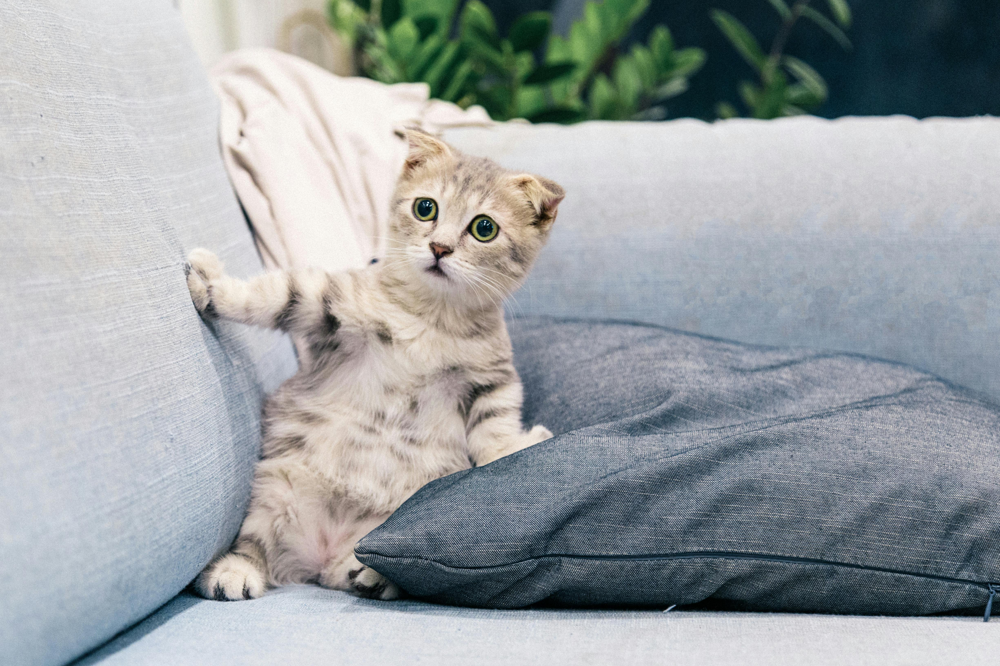
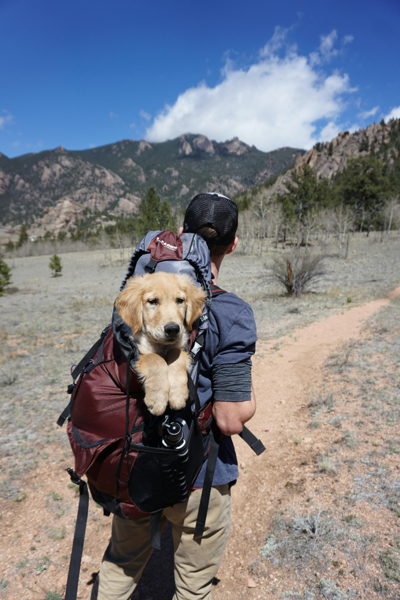
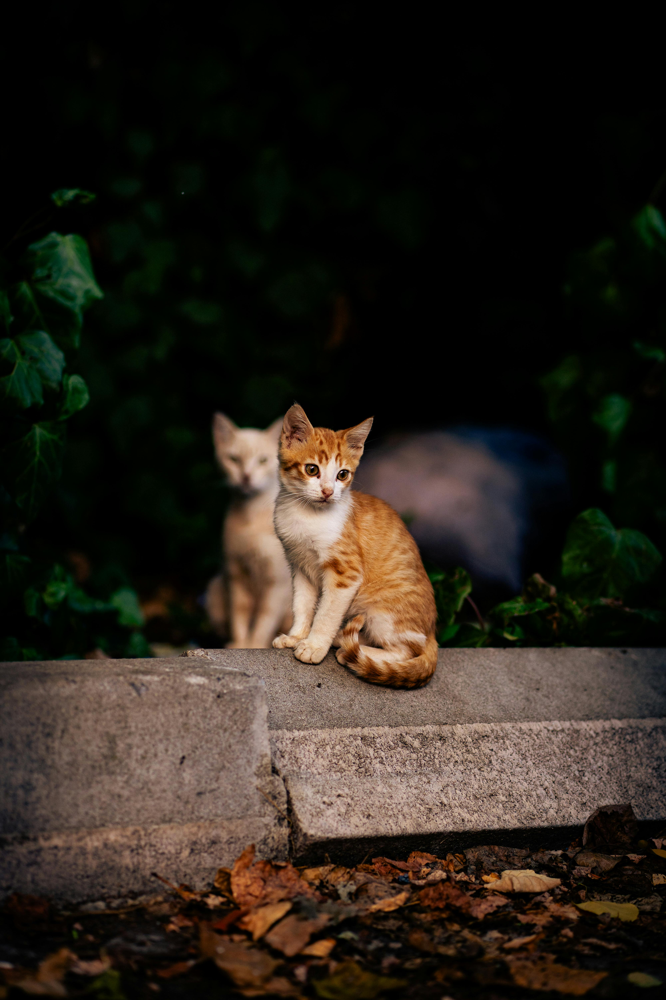
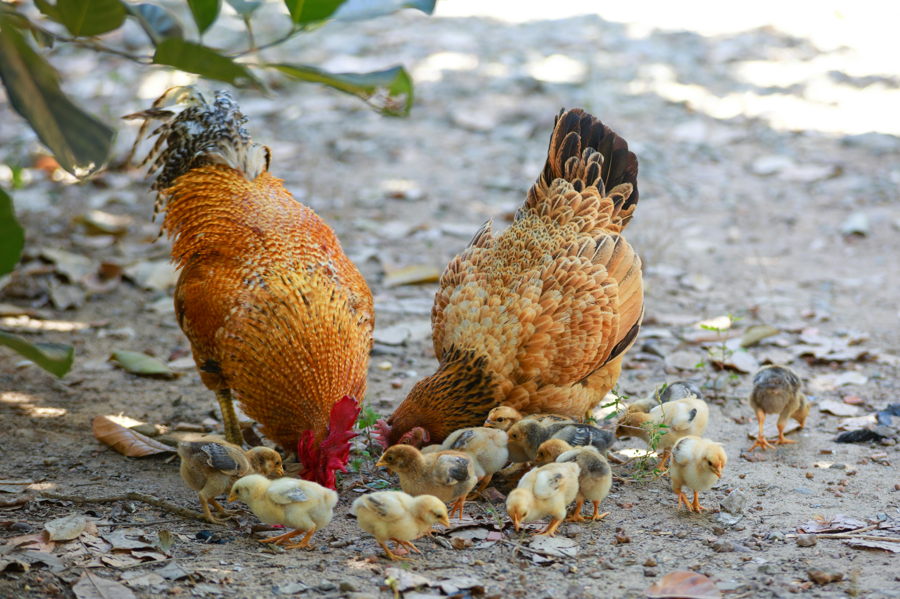
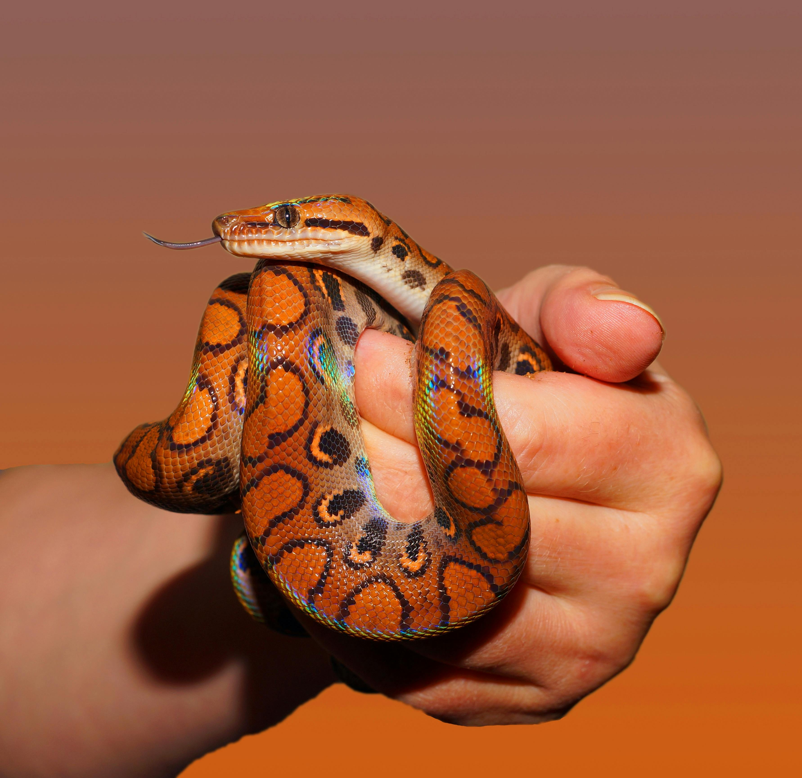
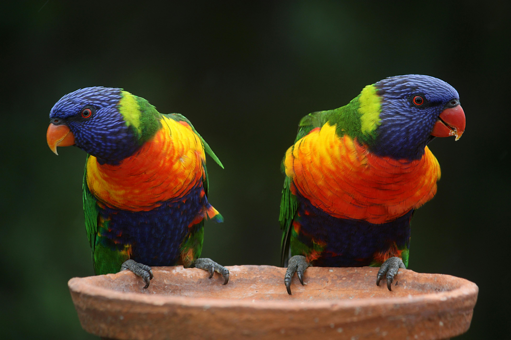

PERRITOS
Los perritos son de los animales mas tiernos del mundo, en este caso parecen ser un par de golden retrive
El proceso puede variar según el país o fundación, pero normalmente sigue este orden: 🐾 1. Búsqueda de la mascota Primero eliges al animal que quieres adoptar, ya sea visitando una fundación, revisando su página web, viendo publicaciones en redes sociales, o asistiendo a eventos de adopción. En esta etapa puedes conocer:su edad,tamaño, comportamiento, historia, y si necesita cuidados especiales. 📝 2. Entrevista o formulario de adopción. Las fundaciones necesitan asegurarse de que el animal estará en un buen hogar. Por eso piden información como: ¿Dónde vives? ¿Tu vivienda permite mascotas? ¿Tienes tiempo para cuidarlo? ¿Hay niños u otras mascotas en casa? ¿Por qué quieres adoptar?
🐾 Cuidado básico de una mascota El cuidado adecuado de una mascota puede variar según la especie o sus necesidades, pero normalmente sigue este orden: 🐾 1. Alimentación correcta Primero debes conocer qué comida es apropiada para tu animal, ya sea alimento balanceado, dieta húmeda, frutas permitidas o suplementos recomendados. En esta etapa puedes revisar: su edad, tamaño, actividad, salud actual y si requiere una dieta especial. 📝 2. Higiene y bienestar diario Las mascotas necesitan atención constante para mantenerse sanas. Esto incluye: cepillado, baño, limpieza de orejas, corte de uñas, visitas al veterinario, vacunas, desparasitación y un entorno seguro en casa.
El esquema de vacunas para una mascota depende de su especie, edad y estilo de vida, pero en general sigue pasos parecidos: 🐾 1. Vacunas esenciales Son las que protegen contra enfermedades graves y muy contagiosas. En perros incluyen moquillo, parvovirus, hepatitis y rabia; en gatos, panleucopenia, calicivirus, rinotraqueitis y también rabia. Estas suelen aplicarse en varias dosis iniciales y luego refuerzos anuales o bianuales. 📝 2. Vacunas opcionales El veterinario puede recomendar otras según el lugar donde vivas y los riesgos: leptospirosis, tos de las perreras, leucemia felina, entre otras. Es importante guardar el carné de vacunación y cumplir siempre las fechas para evitar graves brotes peligrosos.
Los perritos son de los animales mas tiernos del mundo, en este caso parecen ser un par de golden retrive

De mis animales favoritos los gatos, tienen un nose qué que los hace irresitibles, son tiernos, limpios, suaves y por desgracias desinteresados

De las fotos mas curiosas que encontre porque ese perrote no parece estar para nada incomodo metido en esa mochila

Gatito naranja se sienta orgulloso en la piedra mientras su amigo blanco aparece borroso guardando compañía en el fondo oscuro verde

Gallina y gallo protegen a sus pollitos amarillos que exploran el suelo juntos buscando comida bajo la sombra del árbol cercano.

Serpiente pequeña se enrosca suave en una mano humana mostrando sus dibujos brillantes y una mirada calma sin miedo al contacto.

Dos loros de colores intensos comparten un plato de agua y se observan con curiosidad en silencio sobre el barro cálido.